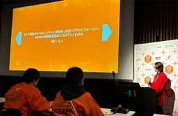
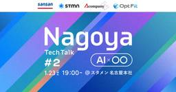
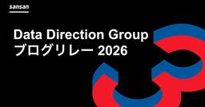
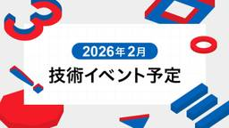

Sansan Tech Blog
https://buildersbox.corp-sansan.com/
Sansanのものづくりを支えるメンバーの技術やデザイン、プロダクトマネジメントの情報を発信
フィード

SRE Kaigi 2026で「Sansanの認証基盤のこれまでとこれから」について登壇しました
Sansan Tech Blog
SRE Kaigi 2026での登壇の様子 こんにちは！技術本部 Platform Engineering Unitの樋口です。 2026年1月31日(土)にSRE Kaigi 2026が開催されました。 弊社からは、私と鷹箸が採択されメインホールで登壇してきました。 2026.srekaigi.net 今回の発表について speakerdeck.com 私は、メインホールの3番手として コスト削減から「セキュリティと利便性」を担うプラットフォームへ Sansanの認証基盤のこれまでとこれから というタイトルで登壇しました。 Bill Oneではコスト削減を背景に認証基盤を内製化しAuth0か…
3日前

Bill One QAが目指す姿 -「品質を守る」から「働き方を変える価値を届ける」組織へ
Sansan Tech Blog
この記事は、Bill One開発Unit ブログリレー2025の第22弾になりますこんにちは。Bill One QAマネジャーの秋元真理子です。2024年4月に入社して以来Bill One QAに配属され、現在はグループマネジャーとして、日本のメンバーだけでなく、フィリピン・セブ島にあるSansan Global Development Center (SGDC) のメンバーと共に、日々Bill Oneの品質に向き合っています。入社からこれまで、Bill One QAが目指すべき姿については、日々のミーティングやSlackでのやり取りを通じて断続的に発信してきました。しかし、私たちが何のために…
3日前

Nagoya Tech Talk #2 〜AI × 〇〇〜【冬の陣】イベントレポート
Sansan Tech Blog
中部支店に勤務しているEight Engineering Unitの篠原です。 前回好評だったNagoya Tech Talk 〜AI × 〇〇〜【初陣】に続き、第2回として、「Nagoya Tech Talk #2 〜AI × 〇〇〜【冬の陣】」を開催しました。 sansan.connpass.com 前回はSansanの中部支店での開催でしたが、今回はご登壇もいただいた株式会社スタメン様のご厚意により、名古屋本社のイベントスペースをお借りしての開催となりました。 Opening Talkと会場の様子 2回目となる今回は、前回に続き「AI活用の最新事例」をテーマに、開発・組織・人の成長といっ…
4日前

Vol. 21 Google Cloud Pub/Sub利用時における分散トレーシングの断絶を防ぐコンテキスト伝搬手法
Sansan Tech Blog
この記事は、Bill One開発Unit ブログリレー2025の第21弾になります！ こんにちは。技術本部 Bill One Engineering Unitの前田です。 今回は、前回の記事で宣言したとおり、非同期処理の計装について記事を書きます。今回はコンテキスト伝搬に着目しています。
5日前
Vol. 20 認知負荷の高いコードを書いたエンジニアに起こること
Sansan Tech Blog
この記事は、Bill One開発Unit ブログリレー2025の第20弾になります。 はじめに どんなコードだったのか リリース後のフロー 1. 感謝される 2. リファクタリングのお伺いが立つ 3. "お伺い" が "催促" に変化する 4. 怒りのPR reviewが飛んでくる 何が悪かったのか まとめ Sansan技術本部ではカジュアル面談を実施しています Sansan技術本部ではカジュアル面談を実施しています はじめに Bill One Engineering Unitで経理AXサービス「Bill One」を開発している河端です。 認知負荷の高いコードを、皆さんも見たことがあると思いま…
6日前

中央集権型の限界とデータメッシュの壁。Sansanのデータ分析基盤のこれまでとこれから
Sansan Tech Blog
1. はじめに こんにちは。研究開発部 Data Direction Group（以下、DDG）の永井です。 Data Direction Groupブログリレー（全6回）の最終回のブログとなります。過去にナインアウト株式会社（旧 クリエイティブサーベイ株式会社）にてデータエンジニアとしてインターンしていた際、同社のSansanグループへの参画をきっかけに現在のメンバーと強い接点ができ、縁あってジョインしました。現在は4月に入社した25卒として、全社共通のDWHや開発基盤の整備、社内データ利活用支援プロジェクトの推進などをしています。これまでのブログリレーでは、Sansan AIエージェントの…
6日前

2026年2月技術イベント予定
Sansan Tech Blog
Sansan株式会社では、技術イベントや勉強会の主催・協賛・登壇を行っています。 各イベントの詳細については、以下のリンクからご確認ください。 ※開催状況により、すでに受付を終了している場合がございます。 ※掲載している内容は公開当時の情報です。最新情報は各イベントページをご確認ください。
7日前

ビジネス・データ・現場の全てを理解する。Sansan AIエージェントFDEという仕事
Sansan Tech Blog
はじめに：なぜAIサービスは定着しないのか こんにちは。研究開発部Data Direction Groupの辺見です。 2024年2月にSansanに入社しました。新卒では日系コンサルティングファームに入社し、その後データサイエンティスト、サポートエンジニアを経験してSansanにジョインしました。入社後はSansan Labsの開発、社内データ活用支援を担当し、Sansan AIエージェントの前身となる「Sansan BI」という新規事業の立ち上げと初期開発に携わりました。現在はコンサルティングとエンジニアリングの実務を両方経験してきた強みを活かし、FDE（Forward Deployed …
10日前
AIエージェントのための段階的セマンティックレイヤの育て方
Sansan Tech Blog
SansanのData Direction Groupの中村崚です。 前回、齊藤が「AgenticとWorkflowを"いい感じに"併用する」という設計論を書きました。探索寄りの依頼にはAgenticが強く、定型出力寄りの依頼にはWorkflowが強い、という話でした。 Data Direction Groupブログリレー4回目の本記事では、Workflowを支える「セマンティックレイヤ」の構築方法を、データエンジニアリングの観点から解説します。 私たちは現在、営業支援AIエージェントを開発しています。ユーザーが自然言語で依頼を投げると、エージェントが蓄積された営業活動に関するデータを探索し、…
11日前
営業支援AIエージェントで考えるAgenticとWorkflowの設計論
Sansan Tech Blog
Data Direction Groupブログリレー3日目の記事です。2025年4月よりData Direction Groupにジョインした齊藤です。データエンジニアリングやアナリティクスなどをやりつつ、その延長線上でAIエージェント開発に取り組んでいます。前回記事では、データエンジニアリングのリズムを活かして「依頼を価値に変えるサイクル」をプロダクト開発に持ち込み、"屋台骨（コア体験）に最短で辿り着く"ために引き算して検証を回すお話をしました。今回の記事は、その続きとして「体験を広げながら深掘りしていくフェーズ」では避けて通れない、AIエージェントの設計論についてです。前回記事のStep …
11日前
AfterCommitEverywhereからRails 7.2で追加されたActiveRecord.after_all_transactions_commitへの移行
Sansan Tech Blog
こんにちは、Eightの開発を担当している倉田です。Eightではこれまで、トランザクションのコミット後に処理を実行するためにafter_commit_everywhereからRails 7.2で新たに追加されたActiveRecord.after_all_transactions_commitへ移行しました。本記事では、移行を完了させた方法を紹介するとともに、移行を進める中で直面した、両者が混在する環境における技術的な問題点についても掘り下げます。
12日前
データエンジニアの観点でプロダクト開発を語る
Sansan Tech Blog
はじめに SansanのData Direction Groupの中根です。 2024年にデータエンジニアとしてSansanに入社しました。社内でのデータ利活用、Sansan BIの開発を経て、現在はエージェントアプリケーションチームとしてSansan AIエージェントの開発に携わっています。前職ではSIerとして10年以上、システム開発やCCoEに携わってきました。 坂口が「『データから収益を生み出す』ことへの挑戦」というテーマで、SansanがAIエージェントで目指す世界観を語りました。本記事ではデータエンジニアの観点でプロダクト開発についてお話しします。 アプリケーション開発とデータエン…
12日前
データから収益を生み出す挑戦。Sansanの独自資産を武器に、本気でAIエージェントを作りに行く話
Sansan Tech Blog
はじめに：なぜ今、Sansanでデータをやるのか こんにちは。研究開発部 Data Direction Group（以下、DDG）の坂口です。 Data Direction Groupブログリレー（全6回）の記念すべき1つめのブログとなります。2023年9月に入社し、現在は全社横断のデータ基盤開発と利活用、後述する新規事業のプロダクト開発をリードしています。昨今、猫も杓子も「生成AI」の時代です。多くの企業がAI活用を模索していますが、私は「AIの価値は、食わせるデータの質と独自性で決まる」と考えています。私がSansanを選んだ理由はまさにそこにあります。Sansanには「名刺」というユニー…
13日前
Vol.19 不確実性の高いプロジェクトを仮説検証しながらチームで前に進めた話
Sansan Tech Blog
この記事は、Bill One開発Unitブログリレー2025の第19弾です。 1. はじめに 2. プロジェクトの背景 3. プロジェクトの目的 4. 仮説検証で不確実性を減らしながら前進する スプリントレビューで目線を合わせる あえてやらなかったこと 5. プロジェクトを通して得た学び 動くものベースで議論する 今決めることと後で決めることを分ける ゴールから逆算して本当に必要なことを優先する 6. おわりに Sansan技術本部ではカジュアル面談を実施しています 1. はじめに 技術本部 Bill One Engineering Unitの川原です。Webアプリケーション開発エンジニアとし…
17日前
ネットワーク運用、まだ手動ですか？SansanがMeraki API × AIで定義する次世代の運用スタイル
Sansan Tech Blog
はじめに こんにちは、コーポレートシステム部の正木です。コーポレートエンジニアとして社内システムやインフラに関連する設計・開発・運用を担当しています。 はじめに部門について簡単に紹介させていただきます。私が所属するのはコーポレートシステム部という部門で、いわゆる情報システム部門（情シス）です。部のミッションとして掲げているのが「EXをシンプルにする」というものです。EXとはEmployee Experience（従業員体験）のことです。 前回の記事では「6GHz SSID導入への挑戦：高密度オフィスWi-Fiの混雑をどう解消したか」というテーマで、本社における最新規格の導入と電波品質改善のプロ…
18日前
Vol.18 請求書明細データ基盤のデータストアとしてAlloyDBを採用した理由
Sansan Tech Blog
この記事は、Bill One開発Unit ブログリレー2025の第18弾です。 技術本部 Bill One Engineering Unitの向井です。 2025年11月、Bill Oneは「AI自動照合」という機能をリリース*1しました。この機能は、これまで人手で行っていた請求書の内容と納品や検収の照合、発注データとの総額・明細単位での照合を自動化するもので、業務の大幅な効率化を実現します。今回は、この機能を支える請求書明細データ基盤の技術背景、その中でもデータストアとして リレーショナルデータベース（AlloyDB）を選択した理由について解説します。 *1:https://jp.corp-…
20日前
Vol.17 AI駆動開発を加速させるQAフローの最適化
Sansan Tech Blog
この記事は、Bill One開発Unit ブログリレー2025の第17弾になります。 はじめに こんにちは。Bill OneでQAエンジニアをしている林樹坤です。現在、社内のあらゆるプロダクトでAI駆動開発が進んでいます。Bill Oneも同じです。AI駆動開発そのものの背景やBill Oneの取り組みについては、こちらのブログBill One開発マネージャーと挑む！ AI駆動開発合宿で掴んだ、AIを"思考の相棒"にする3つの勘所 - Sansan Tech Blogをぜひご覧ください。その大きな流れの中で、私たちBill One QAは、AI駆動開発を見据えたQAプロセスの整備に早期から着手…
24日前
OpenSearchCon Japan 2025に参加してきました！
Sansan Tech Blog
こんにちは！Eight Engineering Unit Platformグループで名刺アプリ「Eight」のSREをしている中鉢です。2025年12月11日、東京虎ノ門で開催された OpenSearchCon Japan 2025 に参加してきました。OpenSearchConは2022年から世界的に開催されているカンファレンスであり、日本では今回が初開催となります 🎉 今回は参加だけでなく、同じSRE チームの藤原が登壇もしました。Eightでも、ログ分析基盤の改善に伴いElasticsearchからAmazon OpenSearch Serviceへの移行を進めています。本記事では、特に…
25日前
Vol. 16 チーム成果最大化に向き合う新米リーダーの話
Sansan Tech Blog
この記事は、Bill One 開発 Unit ブログリレー 2025の第 16 弾です。 はじめまして 半年間の成果 リーダーとして取り組んだこと 1. 「自分が頑張ればいいは」、意外とチームを苦しめる 2. 決定を遅らせる、走りながら考える 3. 心理的安全性を意識したら、サーバントリーダーシップが育った 4. リスクは気づくものではなく見えるようにするもの 5. レトロスペクティブは反省会ではなく実験設計会 おわりに：リーダーは学習を続ける人 Sansan 技術本部ではカジュアル面談を実施しています はじめまして こんにちは。Bill Oneエンジニアの柳瀬です。普段はBill Oneの受…
1ヶ月前
名古屋に異動して、中部支店の採用を本気で強化する話
Sansan Tech Blog
こんにちは。Sansanでデータエンジニアをしている技術本部研究開発部Data Direction Groupの中村です。 自分は生まれてからずっと東京（ちょっと神奈川）で暮らしていたのですが、2025年の11月に名古屋へと引越し、Sansan中部支店へ異動しました。 この記事ではそれに至るまでの背景や、中部支店のご紹介、そして自分がこれから何をなすのかの意気込みについて書いていきたいと思います。
1ヶ月前
Vol15. 新規機能開発で感じていた違和感を、言葉にしてみる
Sansan Tech Blog
この記事は、Bill One開発Unit ブログリレー2025の第15弾になります。 はじめに こんにちは、Bill Oneのプロダクトデザイナーをしています、古川です。 PdM・エンジニア・デザイナーのチームで議論を重ねながら、日々プロダクト開発を進めています。私が所属するチームでは、最近、新規機能の開発に関わる機会が増えてきました。そんな中で強く感じているのが、新規機能開発は、既存機能の改善と比べて進め方が一気に難しくなるということです。まだこの世にない体験をつくるため、ユーザーの使い方は仮説に近く、また仕様も柔らかい状態から始まるため、「何をどこまでやるのか」が揺れ動きやすい。だからこそ…
1ヶ月前
GCS→S3キャッシュプロキシで大規模ML学習のデータ転送コストを削減した話
Sansan Tech Blog
はじめに 技術本部 研究開発部 Architectグループで1カ月強インターンをしていた金古侑大です。*1 Architectグループでは、研究開発に関連するインフラの設計、開発、運用をしています。今回のインターンでは、マルチクラウド環境でのデータ取得コストを削減するためのHTTPプロキシの開発に取り組みました。 Sansan株式会社では、AWS・Google Cloud双方を利用し、サービスを提供、開発をしています。しかし、クラウド間のデータ転送には大きなコストがかかります。特に、大規模な事前学習では、数十TBのデータを100エポック以上学習します。データセットを事前にコピーする方法もありま…
1ヶ月前
ライブラリアップデート時のテスト戦略再設計 ー 品質担保と効率を両立した話 ー
Sansan Tech Blog
はじめに こんにちは。SansanモバイルアプリのQAエンジニアをしている中居です。弊社は、「出会いからイノベーションを生み出す」をミッションに、ビジネスデータベース「Sansan」を提供しています。私たちQAチームは、Sansanモバイルアプリ（以降Sansanアプリ）の品質保証を担っています。今回は、ライブラリアップデート時に実施していたテスト実行工数を削減した事例をご紹介したいと思います。実行テストケース数の削減やテスト対象のOSバージョンの見直しを行うことで、AndroidとiOS共にテスト実行工数を約65%ほど削減できました。
1ヶ月前
10年以上運用されているSansan iOSアプリのすべてのSwiftコードをフォーマットした話
Sansan Tech Blog
はじめに こんにちは！2025年4月にSansanに中途入社し、技術本部 Sansan Engineering Unit Mobile Application GroupでiOSエンジニアとして開発に携わっているヤズジュ夢佐です。 今回は、Mobileチーム「技術負債返済」をテーマとしたTech Blogリレー企画の第六弾となります。 技術負債解消に向けた継続的運用の試み（2025-09-01） 10年もののSansan Mobileで負債・リスクに向き合う（2025-10-29） Android Edge-to-Edge対応 大規模アプリですべての画面を更新するための道のり (2025-11…
1ヶ月前
モバイルエンジニアとして技術を広報するためにやったこと
Sansan Tech Blog
こんにちは！ 技術本部 Sansan Engineering Unit Mobile Applicationグループの堀(@horitamon)です。 Sansanでモバイルアプリ（iOS/Android）の開発を主務としている私ですが、2025年は「Sansanのエンジニア組織を世に広める仕事」もしっかりとやっていました。 最初に前提の話をしておくと、Sansanには「技術広報」という役割の人や専任部署があるわけではありません。 そのため基本はエンジニアが軸になって動きつつ、企業ブランディングや人事などの他部署と目標やリソースを共有して、必要に応じていろんな人を巻き込みながらイベントやカンフ…
1ヶ月前
TipKitで「初回だけ」新しいタブの存在に気づいてもらう
Sansan Tech Blog
こんにちは。技術本部Eight Engineering Unit Mobile ApplicationグループでiOSエンジニアをしている小清水(@_take_hito_)です。本記事では、Eight iOSアプリの連絡先画面に新設した「同僚」タブに対して、Apple標準のTipKitを使って「初回だけ」ツールチップを表示した背景と、実装中にハマったポイントを共有します。
1ヶ月前
MCPサーバー開発事例 - Sansan MCPサーバーのPoCから学ぶMCP実装入門
Sansan Tech Blog
はじめに こんにちは、コーポレートシステム部の坂尾です。コーポレートエンジニアとして社内システムやインフラに関連する設計・開発・運用を担当しています。 はじめに部門について簡単に紹介させていただきます。私が所属するのはコーポレートシステム部という部門で、いわゆる情報システム部門（情シス）です。部のミッションとして掲げているのが「EXをシンプルにする」というものです。EXとはEmployee Experience（従業員体験）のことです。 我々のチームでは生成AIの活用推進や組織的なナレッジの共有に取り組んでいます。今回の記事のテーマは、Sansan MCPサーバーを開発した話です。Sansan…
1ヶ月前
2026年1月技術イベント予定
Sansan Tech Blog
Sansan株式会社では、技術イベントや勉強会の主催・協賛・登壇を行っています。 各イベントの詳細については、以下のリンクからご確認ください。 ※開催状況により、すでに受付を終了している場合がございます。 ※掲載している内容は公開当時の情報です。最新情報は各イベントページをご確認ください。
2ヶ月前
Amazon Bedrock × Slack Botでインフラ問い合わせ対応を効率化した話
Sansan Tech Blog
この記事は Sansan Advent Calendar 2025 の24日目の記事です。 こんにちは。 技術本部 Sansan Engineering Unit Infrastructureグループの白井達也です。 ありがたいことにクリスマスイブ🦌🛷の担当を頂きました。予定がある方は後日ゆっくり、予定がない方は今夜のお供にどうぞ。🥂クリスマスツリー🎄ほど華やかではありませんが、実用的な内容🎁をお届けします！
2ヶ月前
Vol. 14 海外拠点混成チームで挑んだ、AI自動照合機能開発のふりかえり
Sansan Tech Blog
この記事は、Bill One開発Unitブログリレー2025の第14弾です。 こんにちは、Bill One開発エンジニアの西野（@takapiro_99）です。 2025年6月から10月までの約5カ月間、AI自動照合機能の（プロダクト組み込み部分の）開発プロジェクトリードを担当しました。 本記事では、このプロジェクトで直面した課題と、それに対して実際に試した工夫をふりかえります。海外拠点や外部チームを含む体制で開発を進めている方にとって、ひとつの事例として参考になれば幸いです！ プロジェクト全体像 今回開発したのは、請求書と仕入れに関するデータを総額・明細単位で照合する「AI自動照合」機能です…
2ヶ月前